iOS可访问性：入门¶
在这个iOS无障碍教程中，学习如何使用VoiceOver和无障碍检查器使应用程序更加无障碍。
文章原链接：https://www.raywenderlich.com/6827616-ios-accessibility-getting-started
Version¶
- Swift 5, iOS 13, Xcode 11
更新说明：Fayyaz Syed针对iOS 13、Xcode 11和Swift 5更新了本教程。Vincent Ngo写了原文。
各行各业、各年龄段、不同背景的人都在使用智能手机应用程序，包括残疾人。在设计应用程序时考虑到无障碍性，有助于每个人使用它们，包括有视力、运动、学习或听力障碍的人。
在这个iOS无障碍教程中，你将改造一个现有的应用程序，使其对视觉障碍者更无障碍。在这个过程中，你将学习如何。
- 使用
VoiceOver。 - 用无障碍检查器检查你的应用程序。
- 用
UIKit实现无障碍元素。 - 为残障人士建立更好的用户体验。
本教程需要Xcode 11.3和Swift 5.1。它假定你已经知道Swift开发的基础知识。如果你是Swift的新手，你应该先看看我们的书，Swift学徒。
Note
你需要一个物理设备来使用VoiceOver。这个无障碍功能目前在模拟器中不支持。
开始¶
在本教程中，你将使用一个已经完成的名为Recipe的应用程序，其中包含一个食谱清单和它们的难度等级。它还允许你对你所做的菜肴的质量进行评分。
使用本教程顶部或底部的Download Materials按钮，下载你开始工作所需的一切。打开begin文件夹中的Recipe.xcodeproj。
在你可以在设备上运行该应用程序之前，你需要配置签名。
要做到这一点，点击导航器中的Recipe项目，然后选择同名的目标。选择Signing & Capabilities*标签，然后确保你在顶部选择了调试。最后，从下拉菜单中选择你的团队。
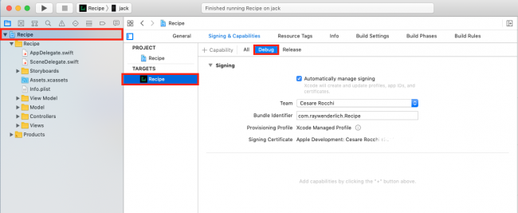
了解Recipe应用¶
现在，构建并运行该应用程序以熟悉其功能。

根控制器是一个包含图片、描述和难度等级的食谱表视图。点击一个菜谱，可以看到一个更大的图片，上面有菜谱的成分和说明。
为了让事情更刺激，你还可以划掉清单上的项目，以确保你有所有必要的成分。如果你喜欢或讨厌你做的东西，你可以切换喜欢/不喜欢的表情符号。
Recipe应用程序的幕后花絮¶
花几分钟时间熟悉一下begin项目中的代码。这里有一些亮点：
Main.storyboard：包含应用程序的所有storyboard场景。你会发现所有的UI组件都是标准的UIKit控件和视图。它们已经可以访问，这使你的工作更容易。RecipeListViewController.swift：管理根表视图，显示所有可用食谱的列表。它使用一个Recipe对象的数组作为数据源。Recipe.swift：是代表一个配方的模型对象。它包含了加载配方数组的实用方法，你将在整个应用程序中使用。RecipeCell.swift：是根控制器的配方列表的单元。它根据传递的Recipe模型对象来显示配方的难度、名称和照片。RecipeInstructionViewController.swift包含详细视图的控制器代码，它显示菜肴的大图片及其成分和烹饪说明。它有一个UISegmentedControl来在表视图中的成分和说明之间切换，表视图使用InstructionViewModel。InstructionViewModel.swift：作为RecipeInstructionsViewController的数据源。它包括成分和说明的描述，以及复选框的状态信息。InstructionCell.swift：定义了一个包含标签和复选框的单元格，用于说明和成分列表。当你勾选该复选框时，它将划掉文本。
现在你了解了应用程序的工作原理，是时候考虑如何让它变得更容易访问。
为什么是可访问性？¶
在你开始编写代码之前，了解无障碍性的好处是很重要的。
- 为无障碍设计你的应用程序使你更容易编写功能测试，无论你是使用KIF框架还是
Xcode中的UI Testing。 - 你还可以通过让更多的人使用你的应用程序来扩大你的市场和用户群。
- 如果您为任何政府机构工作，您需要实施508标准，该标准规定任何软件或技术必须对所有用户开放。
- 在你的应用程序中实施可访问性，表明你愿意为每个用户多走一步，这是件好事。
- 知道你为某人的生活带来了微小但明显的改变，这感觉很好! :]
信服了吗？那么是时候了解VoiceOver了，这是一个为视觉障碍人士提供的无障碍工具。
启用VoiceOver¶
iOS自带的VoiceOver读屏工具，可以帮助用户与软件互动而不需要看屏幕。它是专门为有视力问题的人设计的。
VoiceOver让有视力障碍的用户听到并与屏幕上的内容互动。VoiceOver对手势作出反应，并以声音向用户传达屏幕上的内容或用户选择的内容。从本质上讲，VoiceOver是用户界面和用户触摸输入之间的联系。
使用VoiceOver的最快捷方式是打开iOS设备上的设置应用程序，选择Accessibility ▸ Accessibility Shortcut，然后选择VoiceOver。
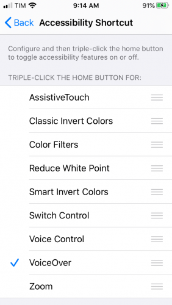
这创建了一个快捷方式，这样你就可以在物理设备上三次点击主屏幕按钮--或者是较新的手机的侧面按钮--来切换VoiceOver的开启和关闭。
Note
除了VoiceOver之外，还有许多其他的无障碍功能，包括反转颜色、增加对比度、颜色过滤器、减少白点、缩放、开关控制等等。在本教程中，你将主要关注VoiceOver。
现在你已经启用了VoiceOver，是时候试试它了。
如何使用VoiceOver¶
VoiceOver带有一些方便的手势预设，使其能够轻松地浏览一个应用程序。以下是一些比较常见的应用内手势，可以使用VoiceOver。
Single-tap上的任何地方，VoiceOver会大声读出该项目无障碍属性中的识别信息。Single-swipe left or right，VoiceOver将选择下一个可见的无障碍项目并大声朗读。向右滑动会向前和向下移动，而向左滑动则相反。Single-swipe down可以逐个字母地拼出重点项目。Double-tap来选择重点项目。Three-finger-swipe在页面视图中向前或向后导航。
关于VoiceOver手势的完整列表，请查看[Apple's Learn VoiceOver gestures on iPhone]（https://support.apple.com/guide/iphone/learn-voiceover-gestures-iph3e2e2281/ios）。现在你知道VoiceOver是如何工作的了--但你的应用在它面前表现如何？你将在下一步进行测试。
用菜谱应用程序尝试VoiceOver¶
在一个物理设备上建立和运行，三次点击主页按钮，打开VoiceOver。左右滑动来浏览菜谱列表。VoiceOver从左上角到右下角读取元素。它从标题的名称开始，然后是每个食谱的名称和相关图片的名称。
但VoiceOver的体验有几个问题：
Image不是对每个单元格中的图像视图的有用描述。你知道那里有一张图片，但不知道它是什么。VoiceOver对每个食谱的难度没有任何说明，使这个功能对视力残疾的人毫无用处。
现在你已经确定了问题所在，你可能想马上着手解决它们。但在这之前，你需要了解一些关于无障碍功能的工作原理。
可访问性属性¶
可访问性属性是你必须实现的核心组件，以支持可访问性。这些属性为VoiceOver提供了关于你的应用程序中的元素的信息，因此VoiceOver可以向你的用户大声读出这些信息。如果它们没有被正确配置，VoiceOver将无法提供关于你的应用程序的必要细节。
一个可访问性属性有五个属性：
Label：识别控件或视图的简明方式。一些例子是返回按钮和食谱图片。Traits：这些描述元素的状态、行为或用途。例如，一个按钮的特性可能是被选中。Hint：描述了一个元素完成的动作。比如说。显示菜谱的细节。Frame：元素在屏幕中的框架，以CGRect的格式。VoiceOver会说出CGRect的内容。Value：一个元素的值。例如，对于一个进度条或一个滑块，当前的值可能是：5（满分100）。5（满分100分）。
大多数UIKit组件为你预设了这些属性；你只需要提供细节来改善用户体验。如果你创建了自定义控件，你就必须自己提供大部分属性。
Note
Recipe应用程序使用标准的UIKit视图和控件，它们已经可以访问，最多需要对属性字符串进行修改。对于使用自定义元素的项目，请务必阅读我们的iOS可访问性教程：使自定义控件可访问教程。
所以现在你知道VoiceOver从哪里获得它提供给用户的信息了，现在是时候了解一个新的工具了，它可以帮助你找到并修复你的应用程序中的可访问性缺陷： Accessibility Inspector。
使用可及性检查器¶
如果你要对一个应用程序进行改造以提高其可访问性，寻找弱点是非常耗时且容易出错的。幸运的是，有一个名为Accessibility Inspector的工具可以提供帮助，它可以做到以下几点：
- 运行你的应用程序并发现常见的可访问性问题。
- 让你在检查模式下检查
UI元素的可及性属性。 - 提供无障碍元素的实时预览，无需离开你的应用程序。
- 支持所有平台，包括
macOS、iOS、watchOS和tvOS。
在你使用食谱上的可及性检查器之前，先看一下这个工具。首先，在Xcode菜单中通过导航到Xcode ▸ Open Developer Tool ▸ Accessibility Inspector来打开它。
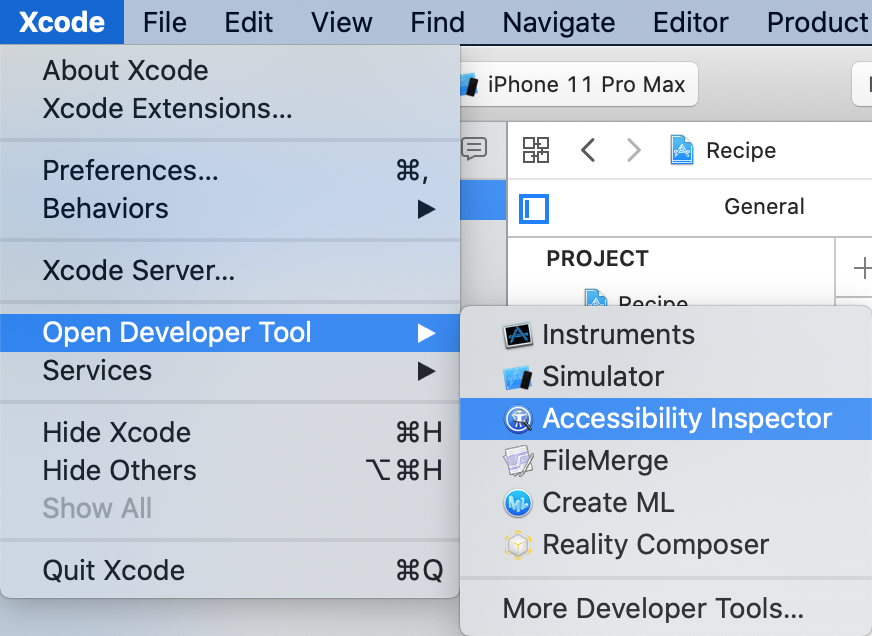
检查员应该看起来像这样：
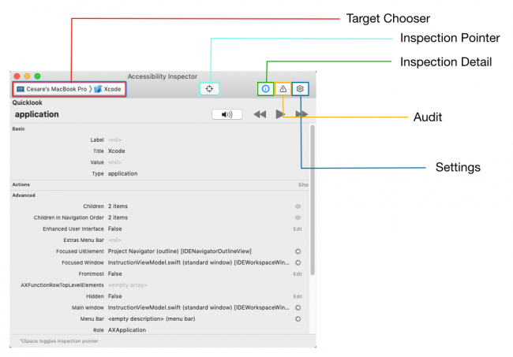
目标选择器让你挑选你想检查的设备。这可以是你的MacBook Pro，一个iOS设备或你的模拟器。
可访问性元素的实时预览让你在模拟器上直接测试。由于实时预览比听VoiceOver更快，这是你在这个iOS可及性教程中做大部分工作的地方。
在模拟器中构建和运行，并将Accessibility Inspector目标改为你的模拟器：
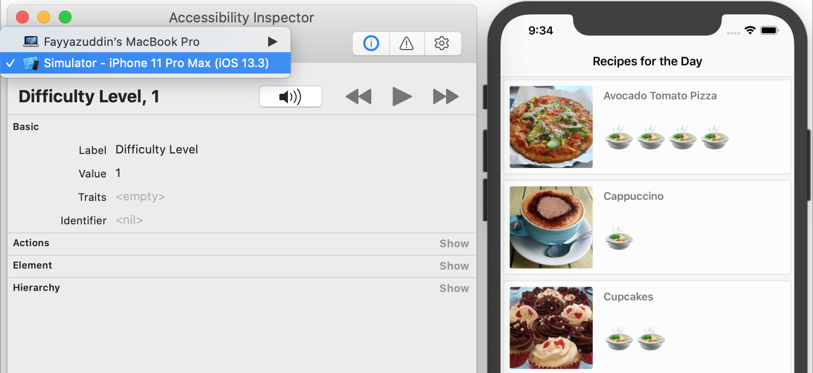
现在你已经打开了这个工具，你可以看一下它的一些最有用的功能。
使用检查指针¶
Note
在写这篇文章的时候，Xcode 11.3，也就是最新的版本，有一个错误，使你不能可靠地使用这个工具。
选择Inspection Pointer，它在检查器UI中看起来像一个网状瞄准器，类似于在你的设备上启用VoiceOver。当你激活指针时，你可以将鼠标悬停在任何UI元素上以检查其属性。通过按钮直接与模拟器互动，将停用检查指针。
检查细节窗格有你需要的一切，以审查和互动你的应用程序中的可访问性属性：
Basic：显示当前突出显示的元素的属性属性。Actions：让你执行操作，如点击一个按钮或滚动视图。在这个窗格中按下执行按钮将对你的目标执行动作。Element：显示当前项目的类别、地址和控制器。就本文而言，它的工作原理并不一致。Hierarchy：显示该元素的视图层次结构，使其更容易理解复杂的视图。
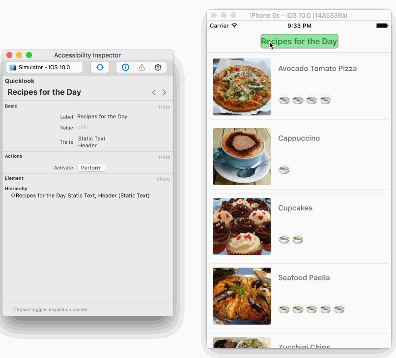
在Xcode中使用Quicklook来检查音频¶
Xcode 11在检查细节窗格中具有一个新的功能，在顶部的Quicklook部分，允许您在Xcode中模拟您在设备上听到的音频。这意味着您可以检查您的用户在使用您的应用程序时听到什么，而不需要实际的设备。
当应用程序在模拟器中运行时，按下Play按钮，让Accessibility Inspector循环查看应用程序，并听它大声描述每个元素。
如果您喜欢手动浏览每个元素，您可以按Pause按钮或按Quicklook部分的Audio按钮。按Forward或Back按钮，以你自己的节奏浏览每个组成部分。

使用这个功能比在设备上运行你的应用程序和使用VoiceOver要快，特别是在开发期间。一如既往，你也希望在真实的设备上测试你的应用程序，以及它的所有可访问性功能。
用检查器审计突出问题¶
检查员审计最有用的功能之一是它的审计能力，它为你的应用程序中的可访问性问题提供警告。要尝试这个功能，请确保模拟器仍在运行，并且你在配方列表中。在检查器中，点击Audit图标，然后Run audit。
你会看到检查器给出几个警告，包括你的一些元素缺乏描述。
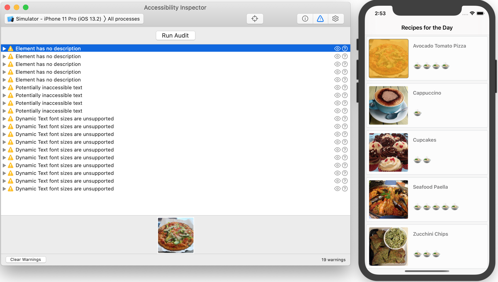
当你点击一个警告时，Xcode在模拟器中以及在检查器审计屏幕的底部突出显示相关的元素。
在这种情况下，与单元格相关的图像视图没有描述。这意味着VoiceOver将无法向你的读者描述它们。
点击其中一个警告的建议修复图标，它看起来像一个圆圈中的问号，检查员将提供关于如何修复该问题的建议。你以后会根据这些建议采取行动。
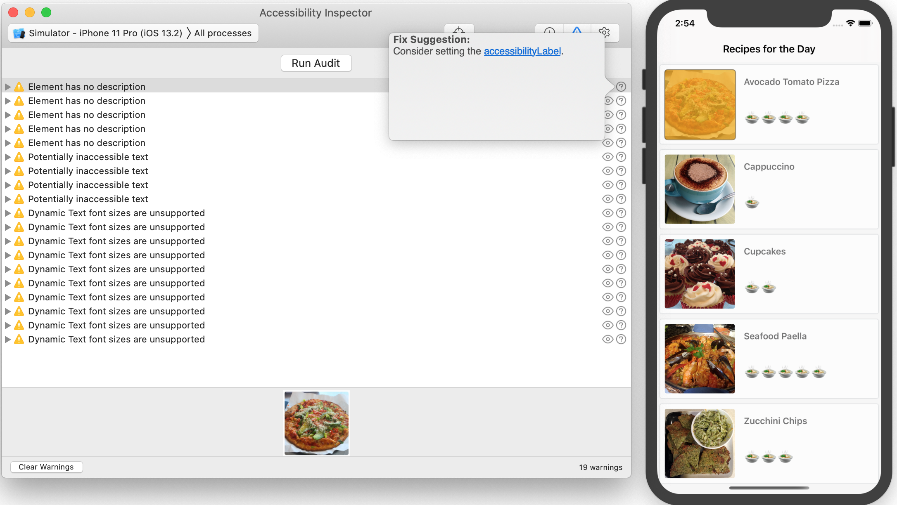
点击Eye图标可以对应用程序进行快照。这对需要创建准确的错误报告的质量保证部门的任何人都很有用。
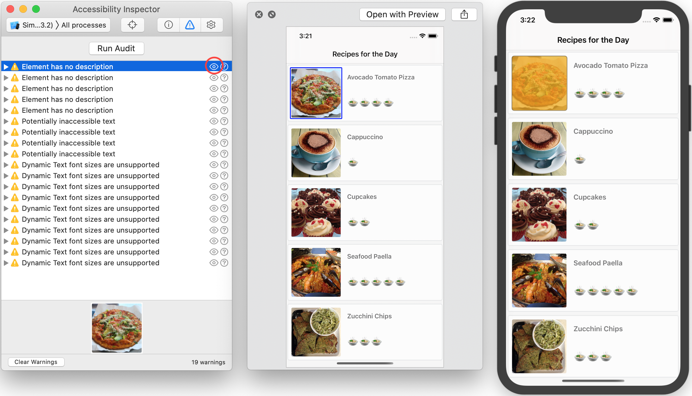
还有一些有用的可访问性设置，你可以在检查器中找到。接下来，你将快速浏览一下这些功能。
额外的检查器设置¶
虽然它们不在本教程的范围内，但最好知道无障碍检查器还可以让你测试以下无障碍设置：
- 颠倒颜色
- 增加对比度
- 降低透明度
- 减少运动
- 改变字体大小
你不再需要使用设置应用程序来启用这些功能。无障碍检查器目前只提供这五个选项，但苹果计划在未来增加更多选项。
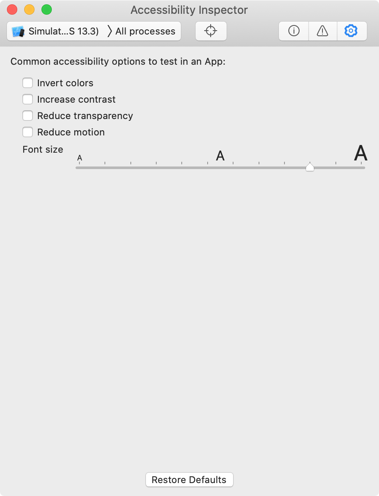
在测试您的应用程序时，辅助功能检查器可以节省时间。但是，请记住，您仍然应该手动测试VoiceOver，以尝试实际的用户体验。这最后一步可以帮助你抓住检查器遗漏的任何问题。
现在你已经参观了无障碍检查器的功能，是时候开始工作你的应用程序了。
使食谱应用程序可访问¶
当你在设备上用VoiceOver测试你的应用程序时，你注意到图像的描述不是很有用。审计工具向你展示了其中的原因。图像视图没有一个无障碍标签。你现在要解决这个问题。
在Xcode中，打开RecipeCell.swift，在文件的底部添加以下代码：
// MARK: Accessibility
extension RecipeCell {
func applyAccessibility(_ recipe: Recipe) {
// 1
foodImageView.accessibilityTraits = .image
// 2
foodImageView.accessibilityLabel = recipe.photoDescription
}
}
这段代码基于单元格的Recipe对象，填补了缺失的可访问性属性。下面是它的工作原理：
accessibilityTraits接收一个特征掩码，用于描述可访问性元素的特征。在这个例子中，.image表示它是一个图像。- 你使用
accessibilityLabel来描述VoiceOver中的元素。这里，它被设置为recipe.photoDescription，这是一个描述图像内容的字符串。
现在，你想把这个也应用到未来的菜谱上。在RecipeCell类中找到configureCell(_:)。在该方法的末尾添加以下一行：
applyAccessibility(recipe)
每次你创建一个单元格，这段代码将使用配方对象中的属性将无障碍属性应用到图片上。
在你的设备上建立和运行，并通过三次点击主页按钮来启用VoiceOver。测试配方列表，看看图像描述是否更有意义。
好多了! 你现在听到的不是简单的Image，没有提供具体细节，而是对图像的完整描述。用户现在可以直观地看到食物，而不是因为不知道图像是什么而感到沮丧。
当应用程序仍在模拟器中运行时，再次运行无障碍检查器，并导航到食谱列表。确保清除检查器中的所有警告，然后点击Run Audit。
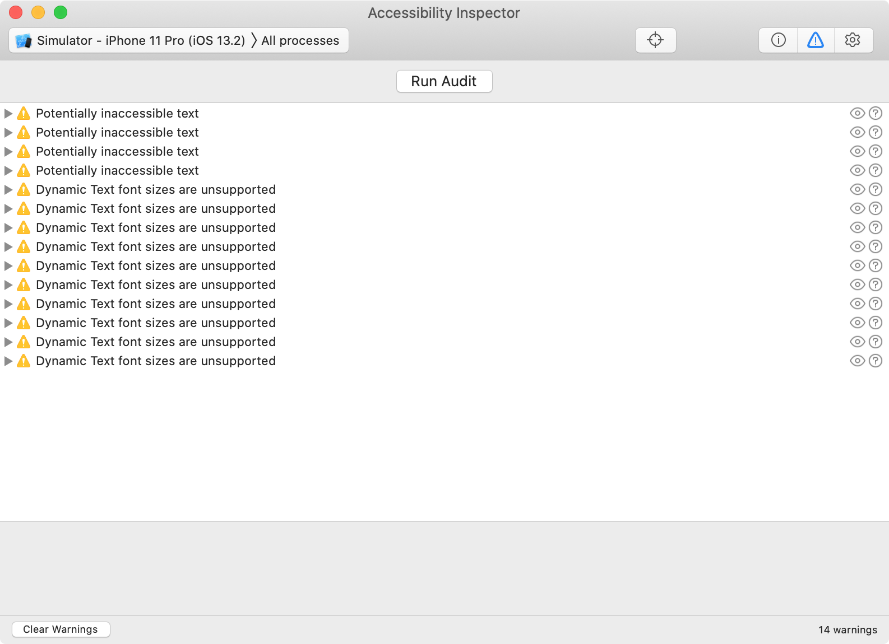
WOOt - 不再有描述警告! 在成功地为图片添加描述之后，这个视图的核心部分现在已经完全可以访问了。
现在，是时候让菜谱的难度等级变得无障碍了。
改造难度标签¶
在可访问性检查器中，你会看到潜在的不可访问文本警告，它告诉你有视觉障碍的用户看不到难度标签。要解决这些问题，你需要让标签变得可访问，并用一个有意义的描述来更新它们的属性。
对于你的下一步，去RecipeCell.swift，在applyAccessibility(_:)的末尾添加以下内容：
// 1
difficultyLabel.isAccessibilityElement = true
// 2
difficultyLabel.accessibilityTraits = .none
// 3
difficultyLabel.accessibilityLabel = "Difficulty Level"
// 4
switch recipe.difficulty {
case .unknown:
difficultyLabel.accessibilityValue = "Unknown"
case .rating(let value):
difficultyLabel.accessibilityValue = "\(value)"
}
下面是关于这段代码的一些更多细节：
isAccessibilityElement是一个标志，当true时，该项目对无障碍功能可见。对于大多数UIKit类，默认是true，但对于UILabel是false。accessibilityTraits帮助描述可访问性元素的特征。因为你不需要任何交互，所以你把它设置为没有特征。- 接下来，你让VoiceOver简洁地确定这个标签的意图。困难程度让用户清楚地知道他们在处理什么。
VoiceOver将读取accessibilityValue作为标签描述的一部分。在这里设置难度等级使这个元素更加有用。
在物理设备上建立并运行你的应用程序，三击主按钮以启用VoiceOver，并刷过菜谱列表。
当你滚动浏览不同的无障碍元素时，VoiceOver会读取每个单元的完整描述，包括难度等级。
检查警告¶
每次你暴露了一个新的可及性元素，就像你在这里做的难度级别，你应该再次运行审核。
启动Accessibility Inspector，如果它还没有运行的话。在您的设备或模拟器上运行应用程序，并相应地设置检查器目标。现在，选择审核切换按钮，并点击Run audit。
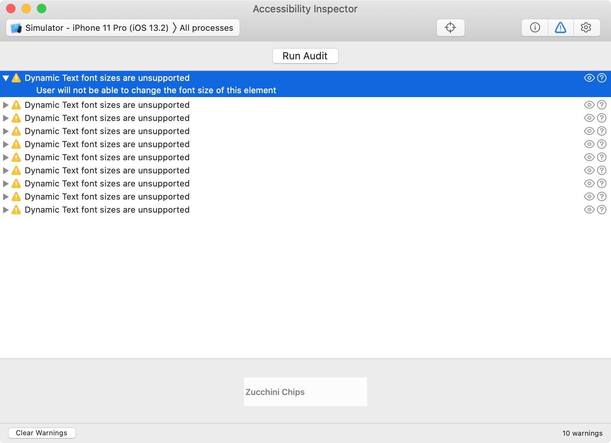
出现的警告更少了! 剩下的是关于标签不支持动态文本。接下来你将解决这些问题。
让文本成为动态的¶
审核员警告你，你缺少一个重要的步骤来使你的应用程序能被所有人使用：动态文本。这是一个重要的无障碍功能，允许有部分视力障碍的用户增加字体大小以提高可读性。你的应用程序目前使用的非动态字体不允许这样做。
点击修复建议图标，看看审计师的建议：
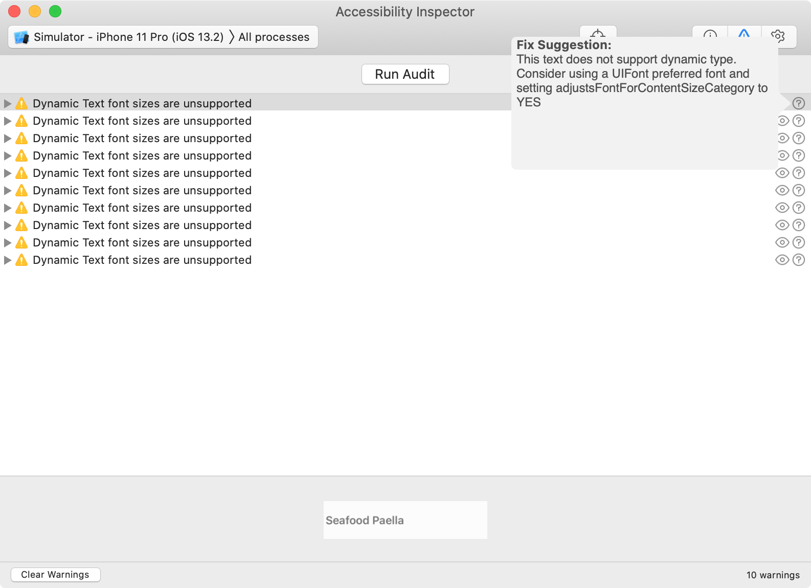
它告诉你使用UIFont首选字体，并将adjustsFontForContentSizeCategory设置为true。你现在要做这个。
在RecipeCell.swift中，在最下面的applyAccessibility(_:)中添加以下代码：
dishNameLabel.font = .preferredFont(forTextStyle: .body)
dishNameLabel.adjustsFontForContentSizeCategory = true
difficultyLabel.font = .preferredFont(forTextStyle: .body)
difficultyLabel.adjustsFontForContentSizeCategory = true
这将preferredFont设置为body样式，这意味着iOS将按照文档正文的样式来设置文本。大小和字体的具体细节取决于可访问性设置。adjustsFontForContentSizeCategory表示当用户改变文本内容大小时，字体应自动更新。
测试你的应用程序如何处理调整字体大小很容易，这要感谢可及性检查器。
在Accessibility Inspector的旁边构建并运行配方应用程序。再次运行审核，所有的警告都应该消失。
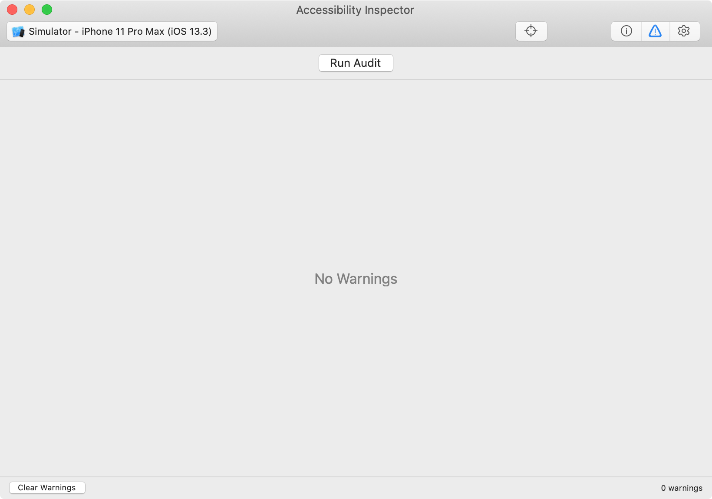
测试一些其他选项¶
导航到检查器中的设置切换，并尝试使用一些工具：
Invert Colors来预览你的界面在这个无障碍功能下是什么样子。这对有光敏症、视力不佳以及在某些情况下有色盲的人很有用。- 你还可以为喜欢大字体的用户实时测试动态字体大小的变化。
当你测试你的应用程序时，它可能看起来很像这样：
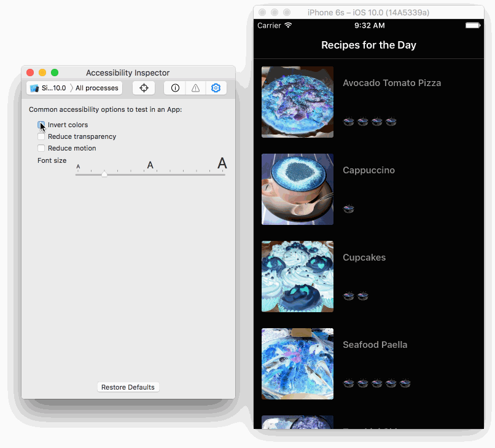
检查器使测试无障碍案例变得容易。从这里，你可以知道配方列表对有视觉障碍的用户来说会很好地工作。
改造配方细节屏幕¶
现在你已经搞定了配方选项的列表，你想看看当用户点击其中一个配方时会发生什么。在你的设备上运行该应用程序，启用VoiceOver，并查看细节视图。它听起来像这样。
在细节视图中，VoiceOver的互动有一些问题：
- 左箭头按钮对于导航来说不是一个很好的描述。用户怎么会知道这个按钮是做什么的？
- 表情符号的脸部状态是。心形的眼睛和疑惑的脸。这些解释会让任何一个用户感到困惑!
- 当用户选择一个复选框时，它读作
icon empty，这并没有解释什么。
在每一种情况下，重要的是解释控件的状态意味着什么，而不是它的外观。Back button比Left Arrow button更清楚。喜欢和不喜欢简洁地解释了表情符号。接下来你要做这两个改动。
要改变导航，打开RecipeInstructionsViewController.swift，在viewDidLoad中添加以下内容，在assert(recipe != nil)之后：
backButton.accessibilityLabel = "back"
backButton.accessibilityTraits = .button
VoiceOver现在说的不是左键，而是后键。
现在，来看看表情符号。在同一文件中，将isLikedFood(_:)的内容替换为以下内容：
if liked {
likeButton.setTitle("😍", for: .normal)
likeButton.accessibilityLabel = "Like"
likeButton.accessibilityTraits = .button
didLikeFood = true
} else {
likeButton.setTitle("😖", for: .normal)
likeButton.accessibilityLabel = "Dislike"
likeButton.accessibilityTraits = .button
didLikeFood = false
}
对于"喜欢"和"不喜欢"模式，你已经添加了一个accessibilityLabel，清楚地说明了按钮的作用。你还设置了accessibilityTraits来识别它是一个按钮，所以用户知道他们可以如何与它互动。
在一个设备上建立和运行，并启用VoiceOver。使用VoiceOver导航到详细配方屏幕，测试你对视图顶部的按钮所做的修改。
现在，这些功能中的每一个都有清晰、简短的描述，帮助用户了解其意图。好多了!
改进检查箱¶
最后一个问题是关于复选框的。对于每个复选框，VoiceOver目前表示icon empty，然后是配方说明。这一点都不清楚!
要改变这一点，请打开InstructionCell.swift，寻找shouldStrikeThroughText(_:)。将整个if strikeThrough语句替换为以下内容：
// 1
checkmarkButton.isAccessibilityElement = false
if strikeThrough {
// 2
descriptionLabel.accessibilityLabel = "Completed: \(text)"
attributeString.addAttribute(
NSAttributedString.Key.strikethroughStyle,
value: 2,
range: NSRange(text.startIndex..., in: text))
} else {
// 3
descriptionLabel.accessibilityLabel = "Uncompleted: \(text)"
}
下面是这段代码的作用：
- 关闭复选标记按钮的可访问性，因此VoiceOver将其作为一个单元而不是两个不同的可访问性元素来阅读。
- 描述的
accessibilityLabel现在使用硬编码的字符串Completed，后面是文字。这提供了所有必要的信息，只需访问一次标签。 - 与已完成的代码一样，如果用户将一个项目标记为未完成，你可以在标签描述前添加
Uncompleted。
再次构建并运行该应用程序，看看它听起来如何。这将是你的用户听起来的音乐。:]
从这里开始去哪里？¶
你可以使用本教程顶部或底部的下载材料按钮下载项目的完成版本。
在这个iOS无障碍教程中，你了解了VoiceOver。你通过滚动浏览每一个可访问的元素来进行手动审核，并亲自测试用户体验。然后，你使用无障碍检查器来进行审核，查看无障碍元素的值，并进行实时动态更改，以反转颜色或改变字体大小。
现在，你有必要的工具来使你的应用程序更加无障碍。知道你将对某人的生活产生积极的影响是有意义的。
在无障碍功能方面有大量的可能性。这个教程只是让你开始接触到表面。下面是更多的资源可以查看。
如果您有任何意见或问题，请加入下面的讨论!